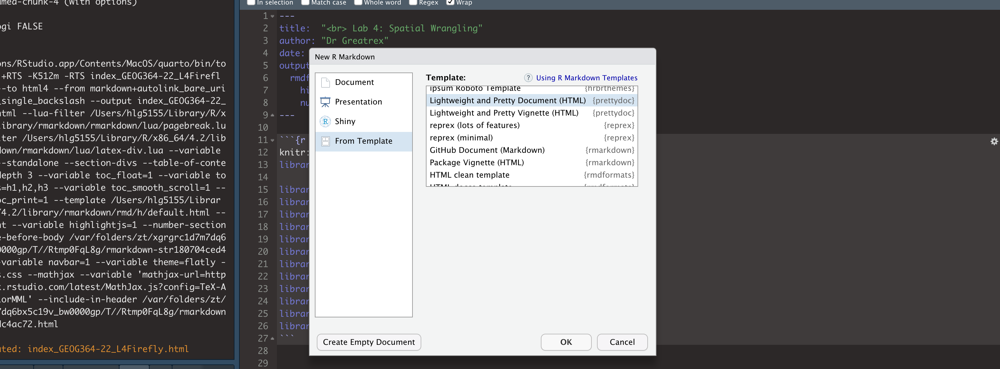
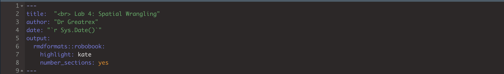

Lab 5: Census Data
1 OVERVIEW
1.1 Learning Objectives
The aim of this week’s lab is a NORMAL TWO WEEK LAB (sorry for the confusion). We will focus on using Census data
SEE CANVAS FOR SUBMISSION DATES.
1.2 Get help
If a link to a tutorial is broken, you should be able to go to the tutorial number and find it in the menu.
Teams is the fastest way to get help. CLICK THIS LINK FOR THE TEAMS WEBSITE FOR LAB HELP
2 LAB SET-UP
2.1 Create a project
- Using R-CLOUD? : click here. This also has instructions on
uploading/downloading code from your computers. https://psu-spatial.github.io/Geog364-2022/index_GEOG364-22_Tutorial_R.html#2_R-Studio_CLOUD
- Using YOUR LAPTOP? : Click here: - https://psu-spatial.github.io/Geog364-2022/index_GEOG364-22_Tutorial_R.html#3_R-Studio_Desktop
2.2 Use a template
You are welcome to use your own template, but I suggest for ease
using one of the professional ones, such as
PACKAGE rmdformats or PACKAGE prettydoc. To
use these,
- (if you have not already) click on the packages tab, then the
install button. Install the
rmdformatspackage and theprettydocpackage. - Same as normal, go to File|New File|R Markdown. But NOW,
click on the templates button on the left.
- You will see a whole load of templates from the different packages.
Each will give you professional formatting for very little work. To
explore what they look like without having to try each one, google the
websites for rmdformats, prettydoc and others..

To see what a template looks like, choose it, press OK, then press knit.
Choose your favourite. Finally, remember to add in the title and author lines at the top of your Rmd file. For example here is the final YAML for this script.

2.3 Add libraries & code options
Edit the first “set-up” code chunk so it looks like this and run/knit to load. You might need additional libraries as you work through the lab. If so, add them in this code chunk AND REMEMBER TO RERUN. If you’re template didn’t have a “setup” code chunk, just create one at the top.
If you see a little yellow bar at the top asking you to install them,click yes!
knitr::opts_chunk$set(cache = TRUE,message=FALSE,warning=FALSE,echo=TRUE)
# LIBRARIES
library(tidyverse)
library(dplyr)
library(ggpubr)
library(skimr)
library(ggplot2)
library(plotly)
library(knitr)
library(raster)
library(sp)
library(sf)
library(tmap)
library(terra)
library(rnaturalearth)
library(biscale)
library(tidycensus)
library(cowplot)
library(units)3 USING CENSUS DATA
Work through TUTORIAL 11, getting the code working in your lab report. It will show you how to download and use data from the US census and American Community survey.
[add link, for now to go to the Tutorials tab]
Choose ANY US STATE that is NOT Iowa or PA. Choose a different one to your friends. Also, choose some additional variables that interest you. For example, past students have looked at water poverty (access to sanitation), access to broadband, demographics and crime etc.
Edit your code so that it works for your new combination.
Make 3 maps, including at least one bichloropleth (same tutorial) that show something interesting about your state. Write a few sentences under each one interpreting your results.
Bonus marks for something that’s genuinely interesting, rather than just two random variables you decided on.
If you want to continue to improve your tmap chloropleths. https://rpubs.com/erikaaldisa/choroplethmapping There are also some good interactive ones out there on R graph gallery.Explain the modifiable areal map problem and both the shape and zone effects. Write what impacts of MAUP do you think you see in your analyses and why. E.g. “Iowa City is dominating the county its in).
Explain what a chloropleth map is and a bi-chloropleth map.
Chloropleths can be difficult to interpret because of both MAUP and the color scales. In the bi_class function you just used, there are four types of color scale possible: “quantile”, “equal”, “fisher”, and “jenks”. Using the internet as a resource (or the textbooks), summarise what each of them is doing. Choose the most appropriate one for your particular analysis and explain your choice.
[[HINT: These links might be useful, but remember to answer in your own words - https://gisgeography.com/choropleth-maps-data-classification/] and https://darribas.org/gds18/slides/lecture_04.pdf]Look at the best practice for chloropleths: https://blog.datawrapper.de/choroplethmaps/ and make a new version of one of your plots with at least one improvement, explaining what you did. If you can’t get it working, you can get most of the marks for explaining what you WANTED to do.
4 BASIC STATS RECAP
In the second part of the course, we will do some more maths. This is your chance to hvae a recap
Go to this Khan Academy website
Work through the materials at your leisure,
For this lab, take:
QUIZ PROPORTIONS 2: https://www.khanacademy.org/math/ap-statistics/xfb5d8e68:inference-categorical-proportions/quiz/xfb5d8e68:inference-categorical-proportions-quiz-2 (5 questions, 10 MARKS)
QUIZ PROPORTIONS 3: https://www.khanacademy.org/math/ap-statistics/xfb5d8e68:inference-categorical-proportions/quiz/xfb5d8e68:inference-categorical-proportions-quiz-3 (5 questions, 10 MARKS)
Then go to this website:
work through the materials at your leisure, and take these two quizzes.
QUIZ MEANS 1: https://www.khanacademy.org/math/ap-statistics/xfb5d8e68:inference-quantitative-means?referrer=upsell#:~:text=Practice-,Quiz%201,-Level%20up%20on (5 questions, 10 MARKS)
QUIZ MEANS 2: https://www.khanacademy.org/math/ap-statistics/xfb5d8e68:inference-quantitative-means/quiz/xfb5d8e68:inference-quantitative-means-quiz-2 (5 questions, 10 MARKS)
FOR ALL 4, INCLUDE SCREENSHOTS IN YOUR LAB REPORT OF YOUR SCORES.
Each quiz should have 5 questions e,g, 20 in all. You can take the quizes as many times as you like, but you drop 2 marks for each question you get wrong in your final screenshots.
5 ABOVE & BEYOND
To get the 4 marks CHOOSE ONE of these options:
Work out how to put tables in markdown and include your Khan scores as a neatly formatted table (look at Kable)
Work out how to put equations in markdown text and include a fancy equation of your choice
6 SUBMITTING YOUR LAB
Remember to save your work throughout and to spell check your writing (next to the save button). Now, press the knit button again. If you have not made any mistakes in the code then R should create a html file in your Lab folder which includes your answers.
7 CHECK THIS BEFORE YOU SUBMIT!
People who use this section get better grades…
7.1 Predict your grade
Here is LITERALLY how we are grading you. Predict your grade!
HTML FILE SUBMISSION - 8 marks
RMD CODE SUBMISSION - 8 marks
MARKDOWN/CODE STYLE - 10 MARKS
Your code and document is neat and easy to read. LOOK AT YOUR HTML FILE IN YOUR WEB-BROWSER BEFORE YOU SUBMIT. There is also a spell check next to the save button. You have written your answers below the relevant code chunk in full sentences in a way that is easy to find and grade. For example, you have written in full sentences, it is clear what your answers are referring to.
CHLOROPLETH PART - 40 MARKS
Make maps for your state [10]
Interpret them for your state [10]
MAUP explanation [10]
Explaining breaks/jenks etc [5]
Best practice [5]
KHAN ACADEMY - 30 MARKS
- lose 2 for each incorrect question
Above and beyond: 4 MARKS
See above
[100 marks total]
7.2 What your grade means
Why is 100% hard? Overall, here is what your lab should correspond to:
| Grade | % Mark | Rubric |
|---|---|---|
| A* | 98-100 | Exceptional. Not only was it near perfect, but the graders learned something. THIS IS HARD TO GET. |
| NA | 96+ | You went above and beyond |
| A | 94+: | Everything asked for with high quality. Class example |
| A- | 90+ | The odd minor mistake, All code done but not written up in full sentences etc. A little less care |
| B+ | 87+ | More minor mistakes. Things like missing units, getting the odd question wrong, no workings shown |
| B | 84+ | Solid work but the odd larger mistake or missing answer. Completely misinterpreted something, that type of thing |
| B- | 80+ | Starting to miss entire/questions sections, or multiple larger mistakes. Still a solid attempt. |
| C+ | 77+ | You made a good effort and did some things well, but there were a lot of problems. (e.g. you wrote up the text well, but messed up the code) |
| C | 70+ | It’s clear you tried and learned something. Just attending labs will get you this much as we can help you get to this stage |
| D | 60+ | You attempt the lab and submit something. Not clear you put in much effort or you had real issues |
| F | 0+ | Didn’t submit, or incredibly limited attempt. |